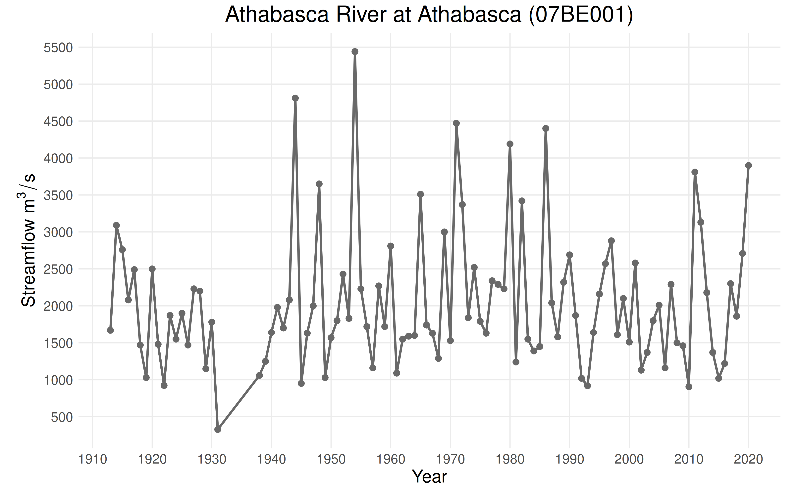
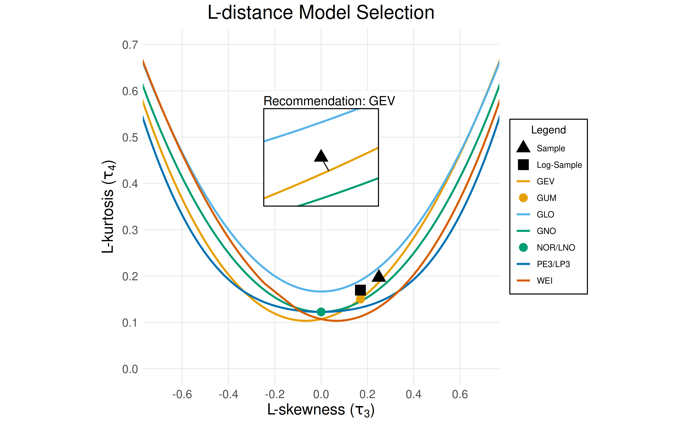
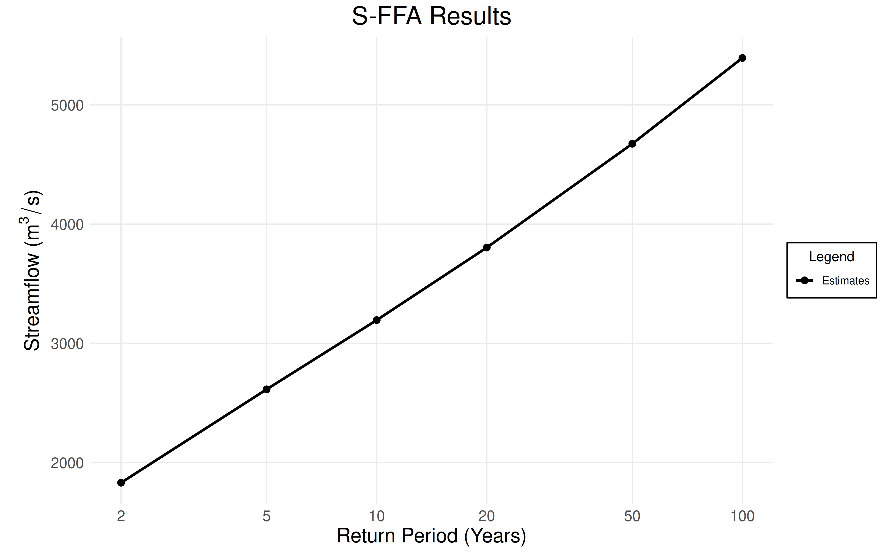

This vignette demonstrates how to use the ffaframework
package to perform flood frequency analysis (model selection, parameter
estimation, uncertainty quantification, and model performance
assessment) under the assumption of stationarity.
The results are expressed in terms of return periods and return levels. The return period of a flood is the expected number of years between annual maximum events of equal or greater magnitude while the return level is the magnitude of the annual maximum event, measured in \(\text{m}^3/\text{s}\).
Case Study
This vignette will explore data from the Athabasca River at Athabasca
(07BE001), an unregulated hydrological monitoring station. A statistical
analysis of the data from this station does not reveal any evidence of
trends in the mean or variability of the data. Data for this station is
provided as CAN-07BE001.csv in the
ffaframework package.
library(ffaframework)
df <- data_local("CAN-07BE001.csv")
head(df)
#> year max
#> 1 1913 1670
#> 2 1914 3090
#> 3 1915 2760
#> 4 1916 2080
#> 5 1917 2490
#> 6 1918 1470
plot_ams_data(df$max, df$year, title = "Athabasca River at Athabasca (07BE001)")
Distribution Selection
First, a suitable probability distribution for the data is selected using the L-moments.
-
select_ldistancechooses the distribution with theoretical L-skewness (\(\tau_3\)) and L-kurtosis (\(\tau_4\)) closest to the sample, based on Euclidean distance. -
select_lkurtosisselects the distribution with the smallest difference between sample and theoretical L-kurtosis (for three-parameter distributions only). -
select_zstatisticuses a fitted 4-parameter Kappa distribution to estimate the sampling distribution of the L-kurtosis and selects the distribution with the smallest z-statistic.
selection <- select_ldistance(df$max)
print(selection$recommendation)
#> [1] "GEV"
plot_lmom_diagram(selection)
Recommendation: Use the generalized extreme value (GEV) distribution.
Note: For information about the other distributions,
see the selection$metrics item.
You can find more information about the probability distributions supported by the framework here.
Parameter Estimation
The ffaframework package provides three methods for
parameter estimation. See here
for more information.
-
fit_lmoments: L-moments parameter estimation. -
fit_mle: Maximum likelihood parameter estimation. -
fit_gmle: Generalized maximum likelihood parameter estimation.
fit <- fit_lmoments(df$max, "GEV")
print(fit$params)
#> [1] 1600.219872 616.666030 0.120747
plot_sffa_fit(fit)
Conclusion: The GEV distribution with
location = 1600, scale = 616, and
shape = 0.12 will be used.
Uncertainty Quantification
Once a probability distribution is fitted, return levels (design
events) can be readily estimated. However, point estimates alone can be
misleading –it is more informative to report confidence intervals to
reflect estimation uncertainty. The uncertainty_bootstrap
function performs uncertainty quantification using the parametric
bootstrap method. It requires three arguments:
-
data: A vector of annual maximum series data. -
model: A three-letter code for a probability distribution (ex."GEV"). -
method: A parameter estimation method. Must be"L-moments","MLE", or"GMLE".
By default, return levels are computed 2-, 5-, 10-, 20-, 50-, and 100- year return periods.
uncertainty <- uncertainty_bootstrap(df$max, "GEV", "L-moments")
plot_sffa_estimates(fit, ci = uncertainty$ci)
Example Conclusion: Every 10 years, we can expect a flood of roughly \(3{\small,}200\text{m}^3/\text{s}\) or greater.
Model Assessment
Model performance is assessed using model_assessment,
which reports a collection of assessment statistics about the flood
frequency analysis. plot_sffa_assessment compares the data
(the “empirical quantiles”) and the predictions of the parametric model
at the plotting positions (the “theoretical quantiles”). The black line
represents a perfect 1:1 correspondence between the model and the
data.
assessment <- model_assessment(df$max, "GEV", "L-moments")
plot_sffa_assessment(assessment)Conclusion: The parametric model generally matches the plotting positions. The model slightly underestimates the data from \(3{\small,}500\text{m}^3/\text{s}\) to \(5{\small,}000\text{m}^3/\text{s}\).